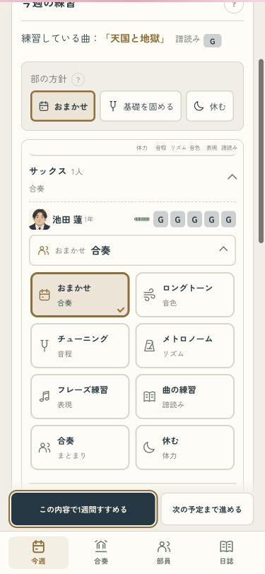
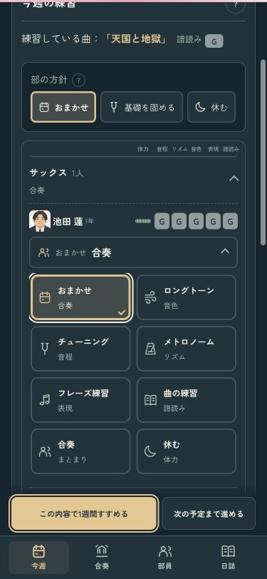
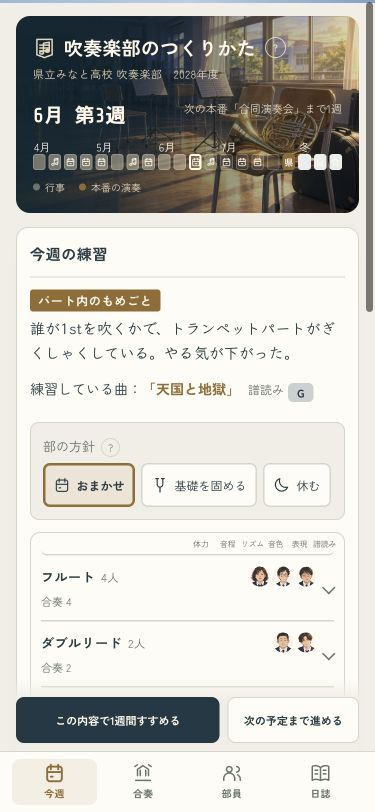
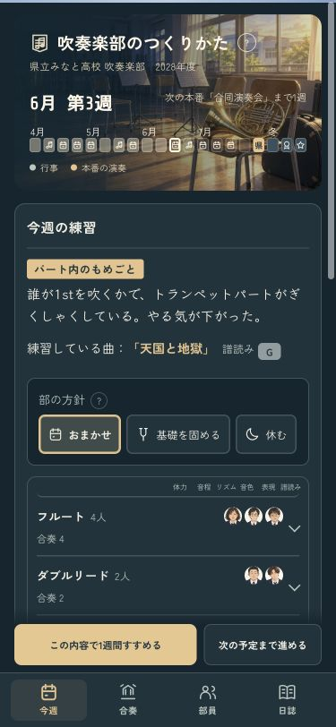

顔を見ながら決める、今週の練習
練習をアイコン付きの2列から選べる形に。選択中は金の線とチェックが付き、選び終わると元の部員の行へ戻ります。力はこれまでどおりG〜Sのランクです。
確認用の画面です。いつものセーブは書き換えません。
練習を選ぶ · 375px
名前を切らずに表示。下の進行ボタンと重ならず、「会場で合奏」が増えた後半も同じ形で選べます。Escapeでも元の行へ戻れます。
ライト
ダーク
パートの中にも顔 · 375px
閉じたパートには部員の顔を最大3人。開くと30pxの顔と名前、ランク、今週の練習を見比べられます。少人数でも閉じた状態を保つようにしました。
ライト
ダーク